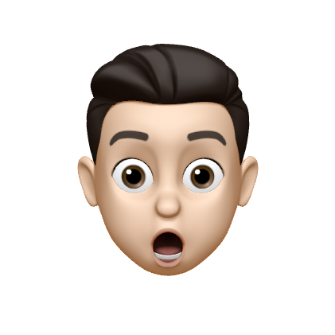
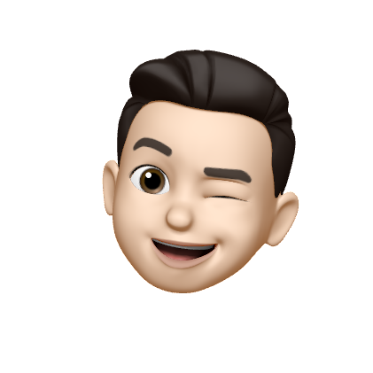
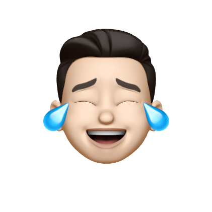
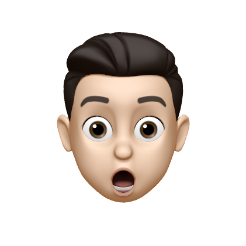
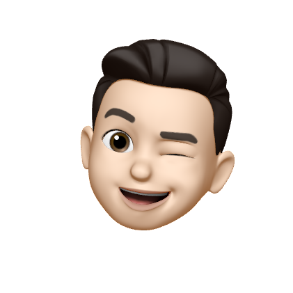
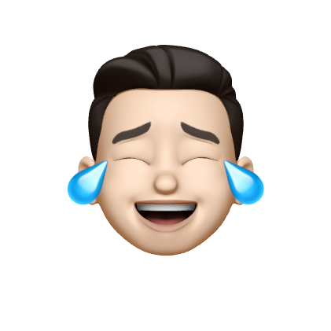

Hi there! My name is George and I'm a computer science student at the University of Birmingham and an aspiring
software developer. I enjoy playing tennis, playing the piano, and photography in my spare time.
Hello there! My name is George and I'm a computer science student at the
University of Birmingham and an aspiring
software developer.
I'm especially interested in making tools that serve humanity, and a minimalist
approach to designing software.
So far, I've built a desktop food diary application using MySQL and JavaFX, a hangman app for iOS
using Swift and UIKit, and a quiz web app with a leaderboard using Django and Postgres.
In my spare time, I love blogging,
photography, playing tennis, and playing
the piano.
On the internet, I love using Twitter, so definitely
feel free to give me a follow!
George is a second year computer science student at the University of Birmingham with
a keen interest in software development.
He has developed key technical skills through project based learning. For example, George
has created a desktop food diary application with a mySQL database in JavaFX, a quiz web
application using Django and Postgres, and a hangman app for iOS using Swift.
As well as his experience with all of these frameworks, George has a good understanding of
some of the fundamental tools used in software development like the UNIX Terminal, git, GitHub
and Docker. George has also used several IDEs common in industry like IntelliJ and XCode, as well as vim.
In his personal life, George enjoys playing tennis, playing the piano, and photography.
George has a blog where he writes about programming and
his other interests.
If you want to get in touch with George, you can send him an
email, or a DM.
If you're interested in hiring George, you can look at his
CV.
 




